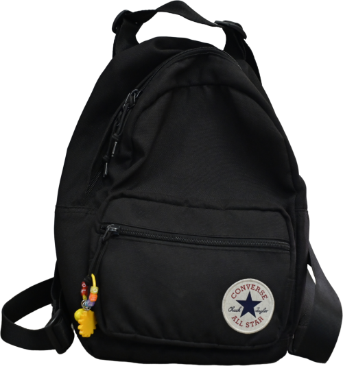

方案 0 = 当前版 · A / B / C 为三个新方向，选定后我直接替换到目录页

小圆章贴标：书包被压得太小、黑色在暗底上不突出，完整性和存在感都不够。
磨砂玻璃展柜 + 大图：书包在带光感的半透明玻璃上浮现，整包完整可见，避免死白，更有展厅质感。
玻璃圆徽：延续徽章语言，磨砂玻璃底比白底更柔和，书包仍是圆形内的小图。
玻璃封面海报：书包最大最抢眼，文字用底部渐变压住，玻璃质感贯穿，最有“博物馆展册”气质。